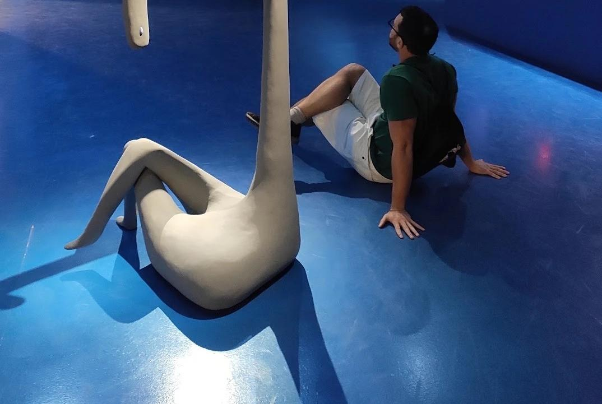

Consultoria de investimentos — CVM
Organização financeira e investimentos com clareza, sem promessas vazias.
Planejamento financeiro e montagem de carteira para quem quer decidir com mais segurança e menos ruído.
Sobre
Quem sou eu
Sou Ricardo Mauad, consultor de investimentos autônomo habilitado pela CVM. Sou economista formado pela UnB, com mestrado em Teoria Econômica pela EPGE/FGV, e tenho as certificações CGA, CNPI e CEA.
Invisto há mais de 15 anos — comecei na poupança, como quase todo mundo, e fui subindo para CDBs, ações e outros ativos que me ensinaram muito mais na prática do que qualquer curso.
Atuei no mercado financeiro tradicional entre 2017 e 2024, até perceber que aquele modelo tinha incentivos que não eram nem justos, nem sensatos para quem investe. Foi esse incômodo que me fez virar consultor autônomo — hoje trabalho só para você, sem comissão de banco ou corretora puxando a recomendação para um lado.
Finanças empresariais (PJ)
Organização financeira para o seu negócio, com clareza sobre números e decisões.
Precificação
Definição de preços que cobrem custos, remuneram o seu trabalho e mantêm a saúde financeira do negócio no longo prazo.
Diagnóstico financeiro
Levantamento completo da situação financeira da empresa — entradas, saídas, margens e pontos de atenção.
Acompanhamento
Acompanhamento periódico dos números do negócio, para decisões mais seguras ao longo do tempo.
Finanças pessoais (PF)
Dois caminhos, conforme o momento em que você está.
Planejamento financeiro
Não é só planilha ou cortar o cafezinho. É sobre um olhar abrangente e humano, que reconhece seus hábitos e o seu comportamento — e a partir daí, elaborar as estratégias que vão trazer mais tranquilidade pro seu dia a dia.
É para quem:
- Quer conhecer o próprio orçamento mensal — seu e/ou do seu negócio
- Quer colocar em prática sonhos e projetos
- Quer formar uma reserva, sem depender só da sorte
- Está planejando uma transição de carreira
- Quer começar a investir, organizar dívidas ou pensar na aposentadoria
Como funciona:
- 1Papo inicial gratuito
- 2Levantamento de gastos, dívidas e metas
- 3Plano financeiro organizado em conjunto
- 4Acompanhamento periódico
Montagem de carteira
O que é: estruturação de uma carteira de investimentos alinhada ao seu perfil e aos seus objetivos, seguindo os princípios de diversificação ampla e custo baixo.
Para quem: quem já tem clareza sobre sua situação financeira e quer estruturar (ou reorganizar) seus investimentos de forma consistente.
Como funciona:
- 1Papo inicial gratuito
- 2Entendimento do seu perfil e objetivos
- 3Estruturação da carteira e apoio na implementação
- 4Revisões periódicas
Importante
Os serviços acima são prestados dentro das regras da CVM para consultores de investimento autônomos. Isso significa recomendações adequadas ao seu perfil e aos seus objetivos — sem promessa de rentabilidade e sem indicação de ativos específicos fora de um processo de consultoria formal.
Minha filosofia
Não é só planilha ou cortar o cafezinho. É sobre um olhar abrangente e humano, que reconhece seus hábitos e o seu comportamento — e a partir daí, elaborar as estratégias que vão trazer mais tranquilidade pro seu dia a dia.
Não tento adivinhar o próximo movimento do mercado, nem recomendo apostar tudo em um ou dois ativos. Minha abordagem se baseia em três princípios:
- →Diversificação ampla: distribuir os investimentos entre diferentes tipos de ativos, no Brasil e fora dele, para não depender do desempenho de uma única aposta.
- →Custo baixo: cada taxa paga é dinheiro que deixa de render para você. Reduzir custos é uma das poucas coisas que estão sob nosso controle no mundo dos investimentos.
- →Horizonte de longo prazo: bons resultados vêm de consistência ao longo de anos, não de tentar acertar o timing do mercado.
Para quem eu trabalho
Trabalho com pessoas e negócios que querem organizar sua vida financeira e investir com mais segurança, sem depender de "dicas quentes" ou de tentar prever o mercado. Não estou aqui pra inventar fórmula pronta — estarei ao seu lado para construirmos o plano juntos.

Quem já passou por aqui
Depoimentos de clientes reais.
"Ricardo me orientou a como lidar com as minhas finanças, antes desorganizadas, de uma maneira simples de gerir o dia a dia e impulsionar meu sonho de uma nova carreira com futura aposentadoria."
"Ele me ajudou a perceber que não era algo único, mas um conjunto de pequenos detalhes que estavam fugindo do meu controle. Reorganizamos meus gastos sem que eu precisasse abrir mão do que era realmente importante pra mim."
"O principal benefício de trabalhar com o Ricardo foi dar ordem ao caos. Identificar, numa fotografia embaçada, o que estava fora do lugar e o que precisava ser aprimorado."
Vamos marcar um papo gratuito?
Pra entender sua situação, ouvir o que você busca e alinhar expectativas — sem custo, sem compromisso.
Agendar papo gratuito